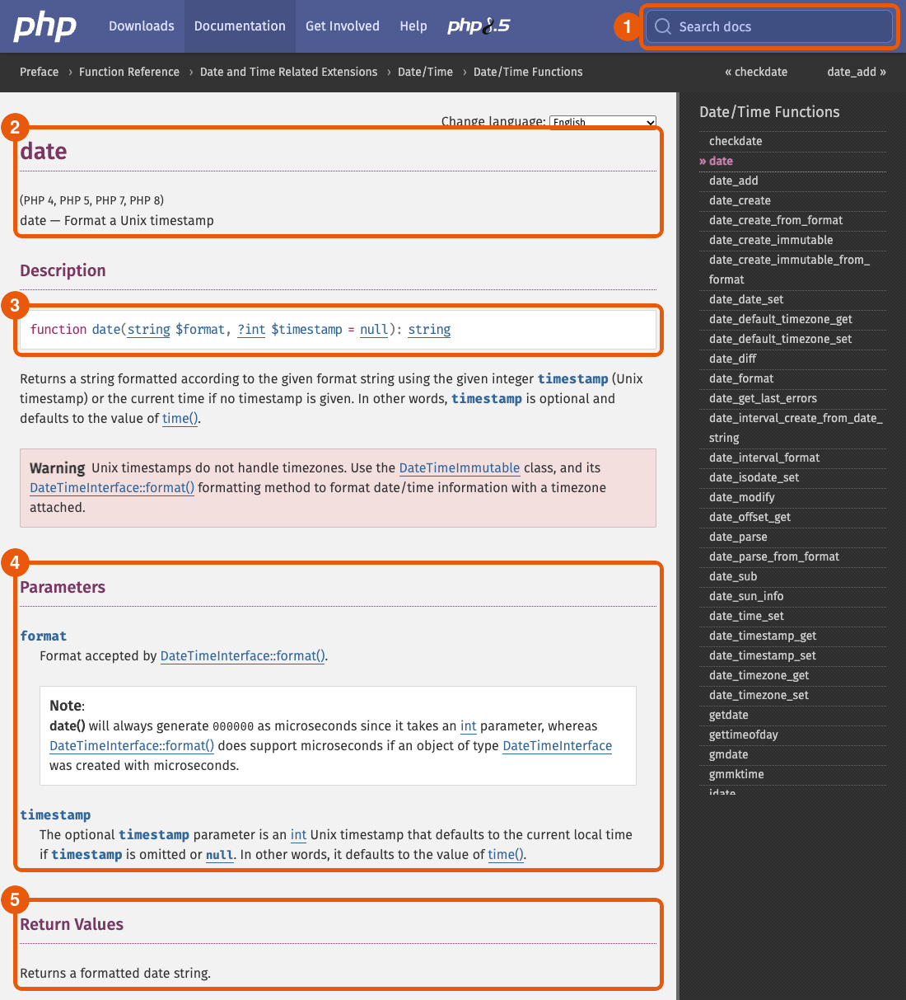
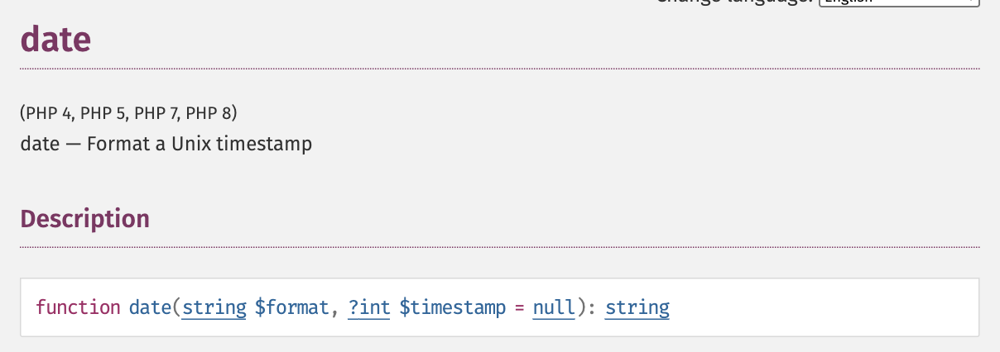
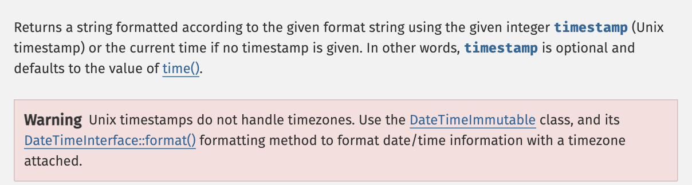
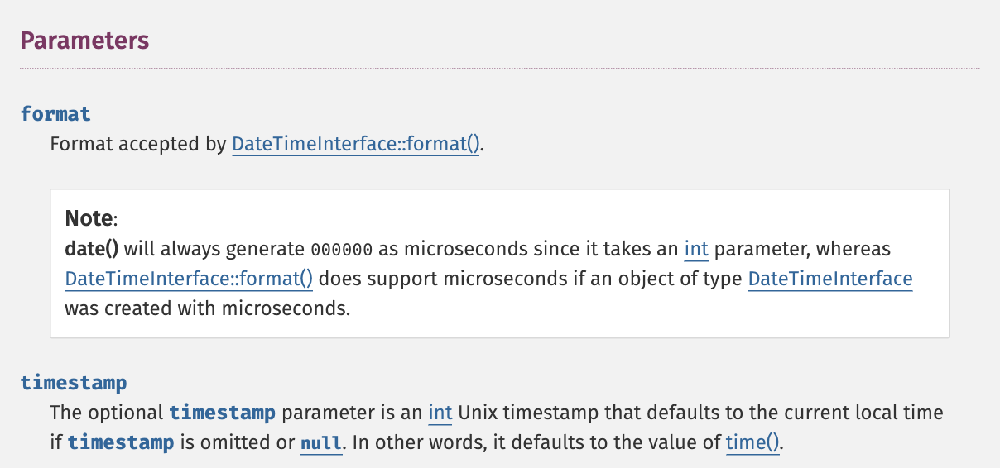
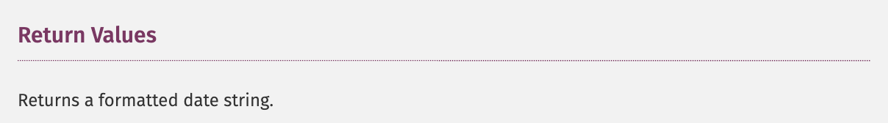
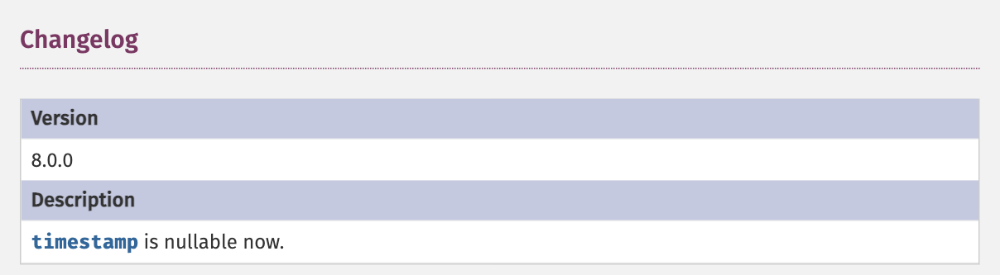
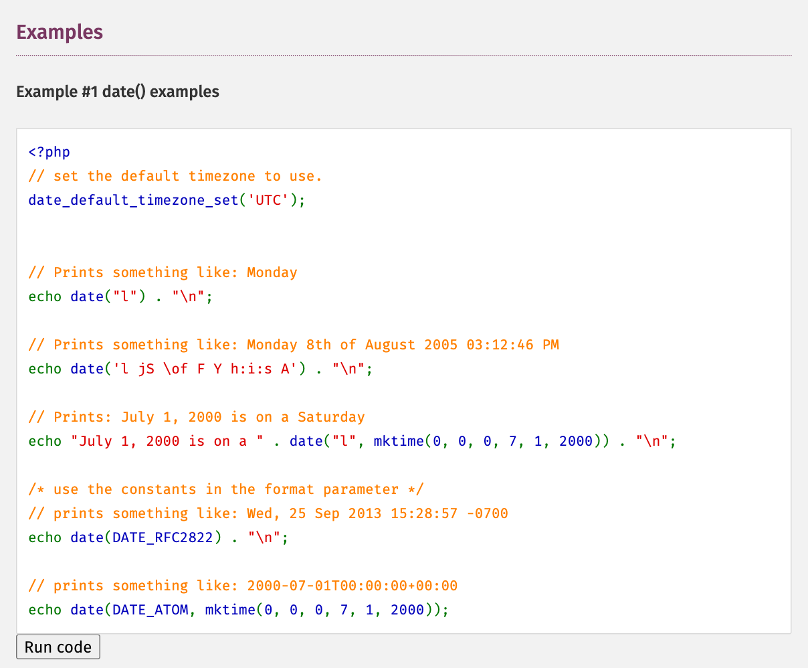
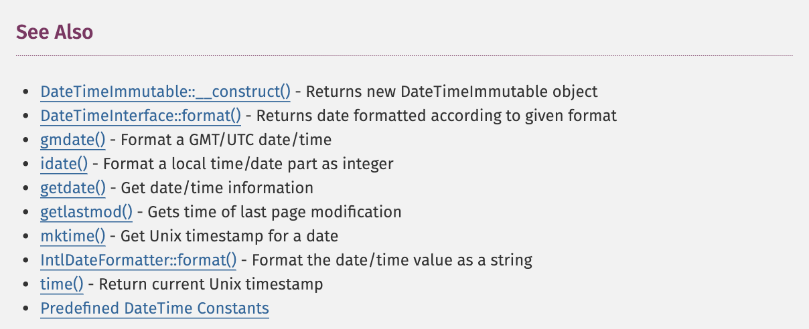
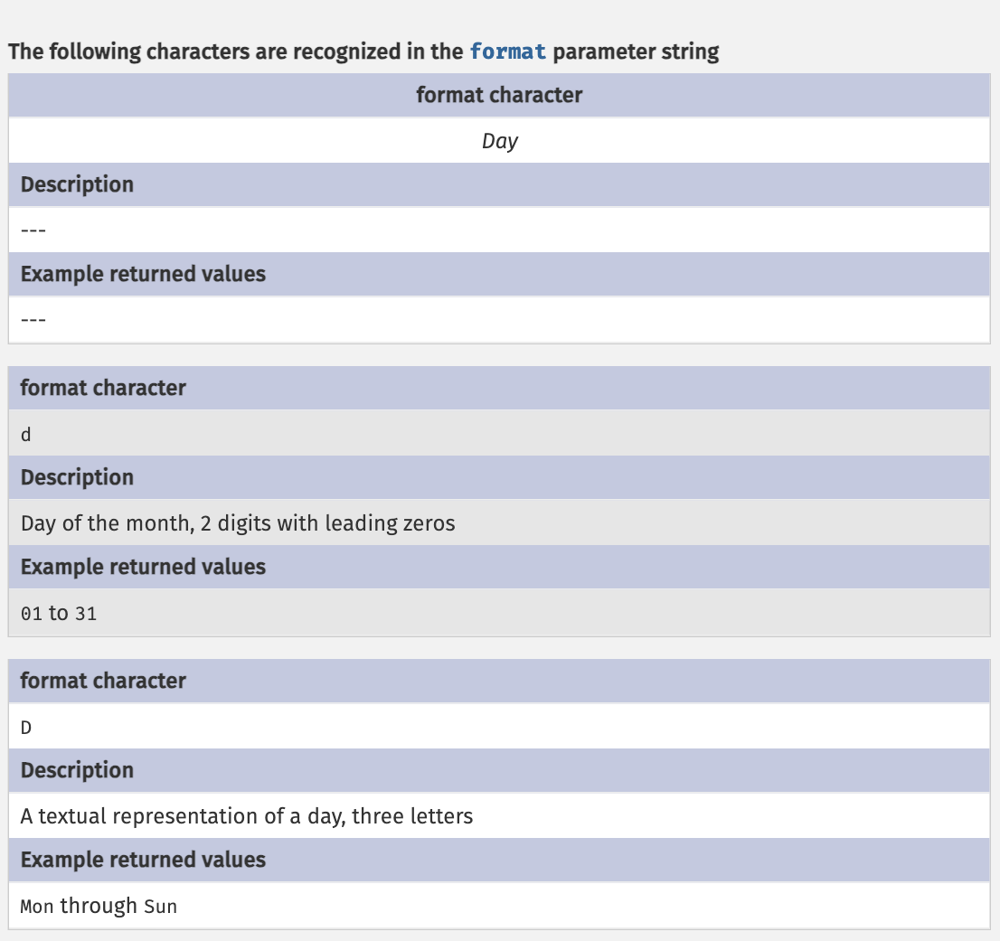

Modulo 03
Leggere la documentazione: date() e il timestamp
Come si legge una pagina del manuale di PHP, partendo da una funzione che conosci già.
Introduzione
Nel modulo 01 hai scritto date("d/m/Y") e date("H:i:s"), e hai visto comparire la data e l'ora. Ma chi ha deciso che d vuol dire giorno e i minuti? E che cosa altro sa fare date? Nessuno se lo ricorda a memoria: chi programma lo legge nella documentazione.
PHP ha migliaia di funzioni. Nessun corso le può spiegare tutte, e non serve: serve saper leggere la pagina del manuale ufficiale che le descrive. In questa dispensa impariamo a farlo su una funzione sola, date, guardandola da vicino:
- come si trova una funzione nel manuale di PHP;
- come è fatta una pagina del manuale, sezione per sezione;
- che cos'è un timestamp, la parola che compare già nel titolo della pagina;
- come si legge la firma di una funzione: parametri, tipi, valori predefiniti, valore restituito;
- come si usa una tabella del manuale, quella dei caratteri di formato;
- un metodo per leggere qualsiasi altra pagina.
1. Il manuale di PHP
La documentazione ufficiale di PHP è sul sito php.net, nella sezione Documentation. Ogni funzione ha una sua pagina. Ci sono tre modi per arrivarci:
- la casella Search docs in alto a destra: scrivi
datee scegli la funzione dall'elenco; - la scorciatoia nell'indirizzo:
php.net/dateporta direttamente alla pagina didate. Vale per qualsiasi funzione:php.net/strlen,php.net/htmlspecialchars…; - un motore di ricerca, con le parole
php date. Attenzione a scegliere il risultato che comincia conphp.net: ci sono molti siti che copiano il manuale, spesso vecchi o sbagliati.
1.1 Perché in inglese
In cima a ogni pagina c'è il menu Change language, e tra le lingue c'è l'italiano. Noi però useremo la versione inglese. La traduzione italiana è incompleta e spesso resta indietro di qualche versione di PHP: una pagina tradotta può descrivere una funzione com'era anni fa. L'originale inglese, invece, è sempre aggiornato. E l'inglese del manuale è sempre lo stesso, poche parole che si ripetono: le impari una volta e valgono per tutte le pagine.
| Nel manuale | In italiano | Che cosa trovi |
|---|---|---|
| Description | Descrizione | la firma della funzione e che cosa fa |
| Parameters | Parametri | gli argomenti da passare, uno per uno |
| Return Values | Valori restituiti | che cosa ti dà indietro la funzione |
| Errors/Exceptions | Errori/Eccezioni | quando e come la funzione segnala un problema |
| Changelog | Registro delle modifiche | che cosa è cambiato nelle varie versioni di PHP |
| Examples | Esempi | codice pronto da provare |
| Notes | Note | avvertenze e dettagli |
| See Also | Vedi anche | funzioni simili o collegate |
| User Contributed Notes | Note degli utenti | commenti scritti dai visitatori |
2. Anatomia della pagina di date()
Ecco la parte alta della pagina di date. Tutte le pagine delle funzioni hanno la stessa struttura: impari a leggerne una e le sai leggere tutte.

date: ① ricerca, ② nome e scopo, ③ firma, ④ parametri, ⑤ valore restituito.
Screenshot da php.net © PHP Documentation Group, licenza CC BY 3.0. Numerazione aggiunta.
A destra c'è l'elenco delle funzioni della stessa famiglia (Date/Time Functions); in alto, la "briciola di pane" (Preface › Function Reference › …) dice in quale parte del manuale ti trovi. Ora guardiamo le sezioni una per una.
2.1 Nome, versioni e scopo

- (PHP 4, PHP 5, PHP 7, PHP 8): le versioni di PHP in cui la funzione esiste.
datec'è da sempre. Una funzione nuova avrebbe, per esempio, solo (PHP 8): se il tuo server ha una versione più vecchia, non la troverai. - date — Format a Unix timestamp: lo scopo, in una riga. "Formatta un timestamp Unix", cioè lo trasforma in un testo leggibile, nel formato che decidi tu.
Già la prima riga contiene una parola che non conosci: timestamp. Succede spesso, leggendo la documentazione: una pagina ti rimanda a un concetto che devi capire prima. Lo affrontiamo nella sezione 3.
2.2 Description: la firma
Nel riquadro bianco sotto Description c'è la riga più importante della pagina, la firma (in inglese signature) della funzione:
La firma dice in una sola riga come si usa la funzione: come si chiama, quali argomenti vuole, di che tipo, quali si possono omettere e che cosa restituisce. La leggiamo pezzo per pezzo nella sezione 4. Sotto la firma c'è una spiegazione a parole:

In italiano: "Restituisce una stringa formattata secondo la stringa di formato, usando il timestamp intero indicato, oppure l'ora attuale se non indichi nessun timestamp. In altre parole, timestamp è facoltativo e il suo valore predefinito è quello di time()." I riquadri rosa Warning segnalano una trappola: qui avvisano che i timestamp non contengono il fuso orario. Ci torneremo.
2.3 Parameters

format e timestamp.
Screenshot da php.net © PHP Documentation Group, CC BY 3.0.
Ogni parametro della firma ha qui il suo paragrafo, con lo stesso nome (senza $):
- format: "il formato accettato da
DateTimeInterface::format()". La pagina non elenca le lettere del formato: ti manda a un'altra pagina, che le descrive perdatee per altre funzioni. Lo vediamo nella sezione 5; - timestamp: "il parametro facoltativo
timestampè un timestamp Unix di tipoint; se lo ometti o passinull, vale l'ora locale attuale".
2.4 Return Values

date.
Screenshot da php.net © PHP Documentation Group, CC BY 3.0.
"Restituisce una stringa con la data formattata". Restituisce, non stampa: per vederla devi passarla a echo, oppure salvarla in una variabile. È la stessa informazione che la firma dà con : string alla fine.
2.5 Changelog

"Dalla versione 8.0.0, timestamp può essere null." Sembra un dettaglio, ma ti dice che su un PHP più vecchio la funzione si comporta in modo diverso. È il motivo per cui conviene sapere quale versione di PHP gira sul tuo server: XAMPP oggi ha PHP 8, EasyPHP Devserver 17 ha PHP 5.6 o 7. Per saperlo con certezza c'è una funzione:
2.6 Examples, Notes, See Also

- Examples: codice completo, da copiare e provare. I commenti dicono che cosa stampa ogni riga (Prints something like…, "stampa qualcosa come…"). Il pulsante Run code lo esegue direttamente nel sito. Gli esempi sono spesso il modo più rapido per capire una funzione: leggili sempre.
- Notes: avvertenze e consigli. Per
date, per esempio, la nota suggeriscestrtotime()per ottenere un timestamp da una data scritta come testo. - See Also: le funzioni collegate. Se
datenon fa proprio quello che ti serve, qui trovi le "cugine":time(),mktime(),gmdate()…

3. Che cos'è un timestamp
Per noi una data è fatta di pezzi: giorno, mese, anno, ore, minuti, secondi. Per un computer è scomodo: i mesi hanno lunghezze diverse, ci sono gli anni bisestili, i fusi orari, l'ora legale. Confrontare due date o calcolare "fra tre giorni" diventerebbe complicato.
Per questo i computer contano il tempo con un solo numero: i secondi passati da un istante preciso, scelto come punto di partenza. Quell'istante è la mezzanotte del 1° gennaio 1970, all'ora di Greenwich (UTC), e si chiama epoca Unix (Unix epoch). Il numero di secondi passati da allora è il timestamp Unix.
| Timestamp | Data e ora (in Italia) |
|---|---|
0 | 1° gennaio 1970, 01:00:00 |
86400 | 2 gennaio 1970, 01:00:00 (un giorno = 24 × 60 × 60 = 86400 secondi) |
1000000000 | 9 settembre 2001, 03:46:40 |
2000000000 | 18 maggio 2033, 05:33:20 |
3.1 time(): il timestamp di adesso
La funzione time() restituisce il timestamp di questo momento. Nella pagina di date era citata due volte: è il valore predefinito di timestamp.
3.2 Da timestamp a data: il secondo argomento di date
Ora la firma di date ha senso: il secondo argomento, $timestamp, è il momento da formattare. Se non lo passi, date usa time(), cioè adesso. Se lo passi, formatta quel momento:
3.3 Fare i conti con le date
Il vantaggio del timestamp è che è un numero intero: per spostarti nel tempo basta un'addizione. Un giorno sono 86400 secondi, quindi "domani a quest'ora" è time() + 86400:
Allo stesso modo, la differenza tra due timestamp è il numero di secondi tra due momenti: dividendo per 86400 ottieni i giorni. Fine mese, anni bisestili e cambi di anno li gestisce date quando converte il numero.
4. Leggere la firma
Torniamo alla riga più importante della pagina e smontiamola:
datenome della funzione ( string $formatparametro 1: obbligatorio , ?int $timestamp = nullparametro 2: facoltativo ) : stringtipo del valore restituito
- Tra le parentesi ci sono i parametri, separati da virgole, nell'ordine in cui devi passare gli argomenti.
- Dopo la parentesi chiusa, i due punti e il tipo restituito:
daterestituisce sempre unastring.
4.1 Dentro un parametro
Ogni parametro è scritto con tipo, nome ed eventualmente un valore predefinito. Il secondo parametro di date li ha tutti:
?può essere anche null inttipo: numero intero $timestampnome del parametro = nullvalore predefinito: il parametro è facoltativo
| Pezzo | Che cosa dice |
|---|---|
int | l'argomento deve essere un numero intero |
? davanti al tipo | al posto di un intero si può passare anche null, cioè "nessun valore" |
$timestamp | il nome con cui il manuale parla del parametro, nella sezione Parameters |
= null | se non passi l'argomento, vale null: il parametro è facoltativo |
Quindi queste chiamate sono tutte corrette, e le prime tre danno lo stesso risultato:
4.2 Quando non rispetti la firma
Che cosa succede se chiami date senza argomenti? La firma dice che $format è obbligatorio:
E se passi un testo dove la firma chiede un intero?
Leggi i due messaggi: "date() expects at least 1 argument, 0 given" ("si aspetta almeno 1 argomento, ne ha ricevuti 0") e "Argument #2 ($timestamp) must be of type ?int, string given" ("l'argomento numero 2, $timestamp, deve essere di tipo ?int, è stata passata una stringa"). Usano le stesse parole della firma: il nome del parametro e il suo tipo, punto interrogativo compreso. Saper leggere la firma vuol dire anche saper leggere gli errori.
4.3 I tipi che incontrerai
| Nella firma | Che cosa vuol dire | Esempi di valori |
|---|---|---|
string | testo | "Anna", "d/m/Y" |
int | numero intero | 0, 18, -3 |
float | numero con la virgola | 7.5, 3.14 |
bool | vero o falso | true, false |
array | elenco di coppie chiave → valore | ["nome" => "Anna"] |
null | nessun valore | null |
?int | un intero oppure null | 5, null |
int|false | un intero oppure false (spesso: "in caso di errore restituisce false") | 1793095200, false |
mixed | qualsiasi tipo | tutti i precedenti |
5. Seguire un rimando: i caratteri di formato
Scrivi una pagina che mostri la data di oggi con il nome del giorno della settimana, per esempio "martedì 27 ottobre 2026".
Per farlo ti servono le lettere del formato. La sezione Parameters di date diceva: "Format accepted by DateTimeInterface::format()". Il link porta alla pagina https://www.php.net/manual/en/datetime.format.php, che contiene una lunga tabella divisa per gruppi (Day, Week, Month, Year, Time…):

Ogni carattere ha tre righe: il carattere (format character), che cosa rappresenta (Description) e i valori che produce (Example returned values). Ecco, tradotti, quelli che userai più spesso:
| Carattere | Significato | Valori |
|---|---|---|
d | giorno del mese, 2 cifre | 01 … 31 |
j | giorno del mese, senza zero iniziale | 1 … 31 |
D | giorno della settimana, 3 lettere in inglese | Mon … Sun |
l (elle minuscola) | giorno della settimana per esteso, in inglese | Monday … Sunday |
N | giorno della settimana come numero (ISO 8601) | 1 (lunedì) … 7 (domenica) |
m | mese, 2 cifre | 01 … 12 |
n | mese, senza zero iniziale | 1 … 12 |
F | nome del mese per esteso, in inglese | January … December |
Y | anno, 4 cifre | 1999, 2026 |
y | anno, 2 cifre | 99, 26 |
H | ora (0–23), 2 cifre | 00 … 23 |
i | minuti, 2 cifre | 00 … 59 |
s | secondi, 2 cifre | 00 … 59 |
Tutti gli altri caratteri della stringa di formato (barre, trattini, due punti, spazi) vengono copiati così come sono. Proviamo con il timestamp 1000000000, così il risultato è sempre lo stesso:
Come ottenere il giorno in italiano senza funzioni nuove? Hai già tutto: date("N") dà un numero da 1 a 7, e un array di coppie chiave → valore può tradurre quel numero in un nome. È l'esercizio 4 in fondo alla dispensa.
6. Un metodo per leggere qualsiasi pagina
6.1 Prova con mktime
Nel See Also di date c'era mktime(): "Get Unix timestamp for a date", cioè "ottieni il timestamp di una data". È il contrario di date: dai giorno, mese e anno e ottieni il numero. Ecco la sua firma:
Applica il metodo:
- sei parametri, tutti interi; solo il primo,
$hour, è obbligatorio; - l'ordine è ora, minuti, secondi, mese, giorno, anno: non giorno, mese, anno come in italiano. È la trappola classica, e la firma te la mostra;
- restituisce
int|false: il timestamp, oppurefalsese qualcosa va storto.
6.2 Prova con number_format
Un'altra firma, con parametri facoltativi di tipo stringa:
Lo scopo è "Format a number with grouped thousands": formatta un numero raggruppando le migliaia. Solo $num è obbligatorio. Se non passi gli altri valgono i predefiniti: 0 decimali, il punto per i decimali e la virgola per le migliaia, come si scrive in inglese. Per l'italiano devi passarli tutti e quattro:
Nella prima riga 1234.5 è diventato 1,235: zero decimali, quindi arrotondato, e la virgola delle migliaia all'inglese. Nessun errore, ma un risultato che non volevi. Le informazioni per evitarlo erano tutte nella firma, nei valori predefiniti.
7. Riepilogo ed esercizi
| Concetto | In una frase |
|---|---|
| manuale di PHP | php.net/nomefunzione, in inglese: sempre aggiornato |
| firma | nome, parametri con tipo, valori predefiniti e tipo restituito, in una riga |
= valore | il parametro è facoltativo e quello è il suo valore predefinito |
?tipo | il tipo indicato oppure null |
: tipo in fondo | il tipo del valore restituito |
| Changelog | che cosa cambia tra le versioni di PHP; phpversion() dice la tua |
| timestamp Unix | i secondi passati dal 1° gennaio 1970, 00:00:00 UTC |
time() | il timestamp di adesso |
date(formato, timestamp) | da timestamp a testo; senza timestamp usa adesso |
mktime(h, i, s, mese, giorno, anno) | da data a timestamp; attenzione all'ordine |
| errori di chiamata | ArgumentCountError e TypeError usano le parole della firma |